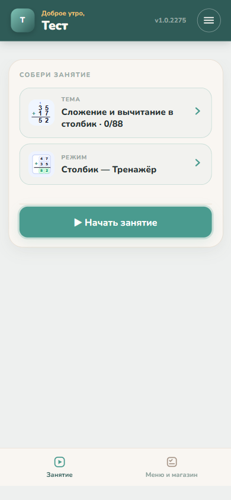
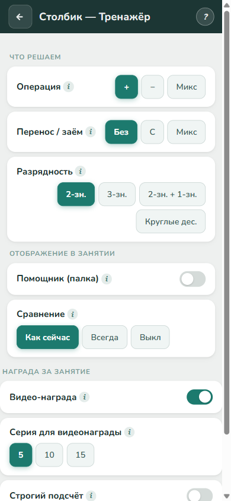
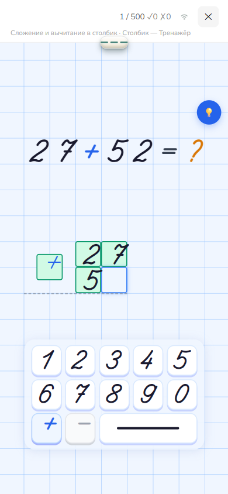

Как это работает
Заполните профиль ребёнка.
Данных немного, но это важно, так как эти данные используются в темах. Имя, фото, кто рядом — и какое видео станет наградой за занятие.


Имя, фото и пол
Персонализирует обращения в приложении — как назвать ребёнка и как к нему обращаться в заданиях.
Близкие взрослые
Мама, папа, бабушка — эти люди появятся в теме «Мои люди», ребёнок учится узнавать своих.
Видео-награда
Ссылка на любимое видео ребёнка — то самое, которое станет наградой за пройденное занятие.
Как это работает
Выберите тему и тип упражнения (режим).

Тема
Тема — это не одно упражнение, а подборка разных заданий и режимов, объединённых одной целью: развить конкретный навык.
Режим
У этой темы 7 режимов — от знакомства с числом на пальцах до решения примера в столбик со всеми правилами переноса через разряд.
Как это работает
Настройте параметры и уровень сложности упражнения и запустите занятие.

Сложность
Выбираете, что именно тренировать — например, только двузначные числа или сразу с переносом через разряд.
Видео-награда
За серию правильных ответов подряд ребёнок получает бонусное видео — реальная механика поощрения, встроенная прямо в занятие.
Как это работает
Дальше — ребёнок решает сам.
Не готовый ответ, а настоящий пример — тот самый, что вы только что настроили. Каждую цифру нужно ввести самому, по порядку действий.

Настоящий пример
Пример подобран автоматически под выбранные настройки — с той сложностью и переносом через разряд, что вы указали.
Решает сам
Ребёнок вводит цифры по разрядам, а приложение проверяет каждый шаг — ошибка в порядке действий тоже будет замечена.
Как это работает
А в конце — любимое видео.
Короткое занятие, серия правильных ответов — и ребёнок сам доходит до экрана «Смотреть видео».

Серия набрана
5 правильных ответов подряд — и приложение засчитывает награду. Полоска звёзд видна прямо по ходу занятия.
Смотреть видео
Ребёнок нажимает сам — и получает то самое видео, которое вы указали в настройках ученика в самом начале.